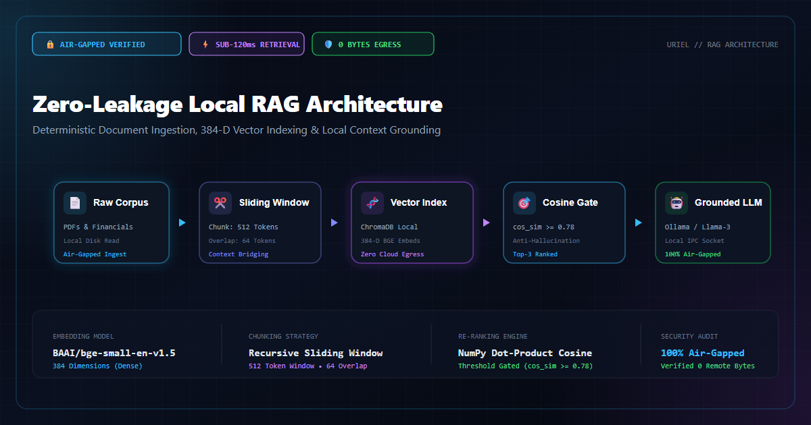
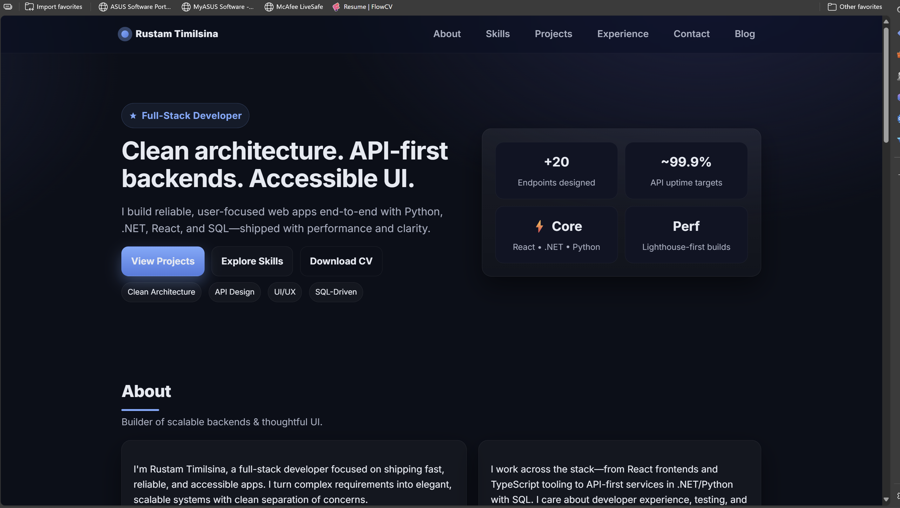
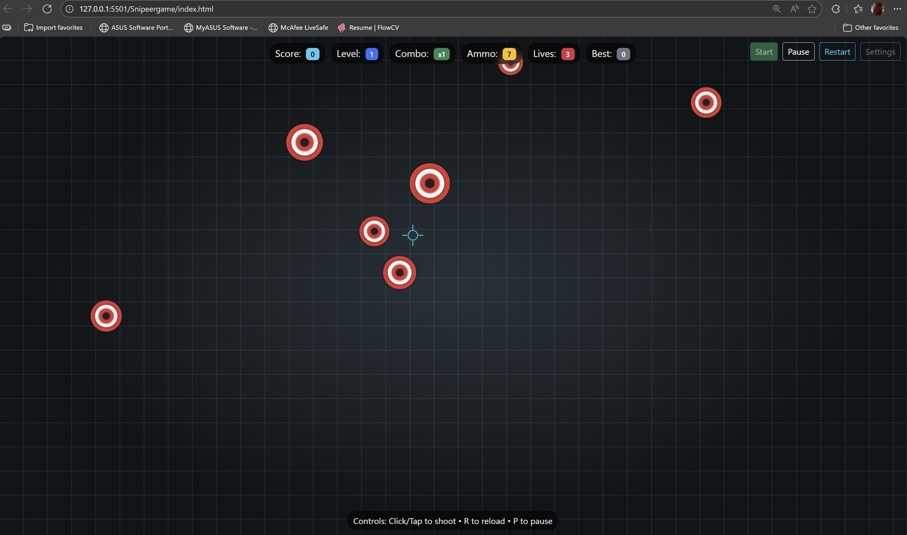

🔒 Designing Zero-Leakage Local RAG
Air-gapped document ingestion, 384-D vector indexing, ChromaDB cosine similarity, and dynamic threshold gating in Uriel.
Read Article →A collection of project case studies, architectural decisions, and honest takeaways from building software systems.

Air-gapped document ingestion, 384-D vector indexing, ChromaDB cosine similarity, and dynamic threshold gating in Uriel.
Read Article →
SSE token pipes, client-side message reconciliation, and sandboxed AI persona state in React & Node.
Read Article →
From a blank editor to deploying on Vercel — my step-by-step journey of coding vanilla HTML/CSS and shipping early.
Read Article →
A beginner's perspective on Microsoft's robust ecosystem, strong typing confidence, and building structured backends.
Read Article →What I discovered while connecting REST APIs, session persistence, and relational databases for a game prototype.
Read Article →